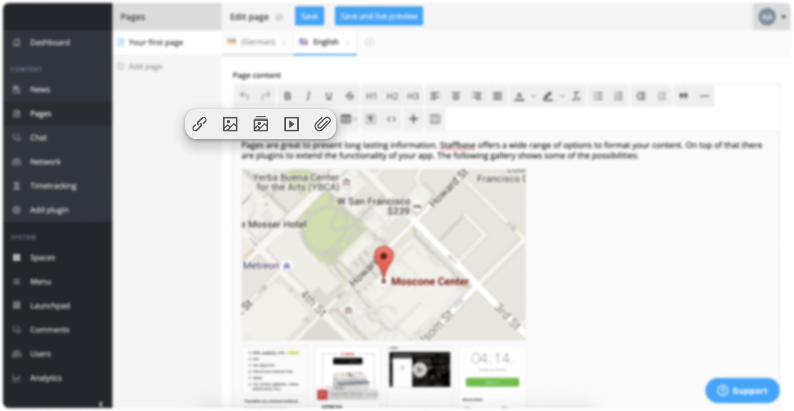
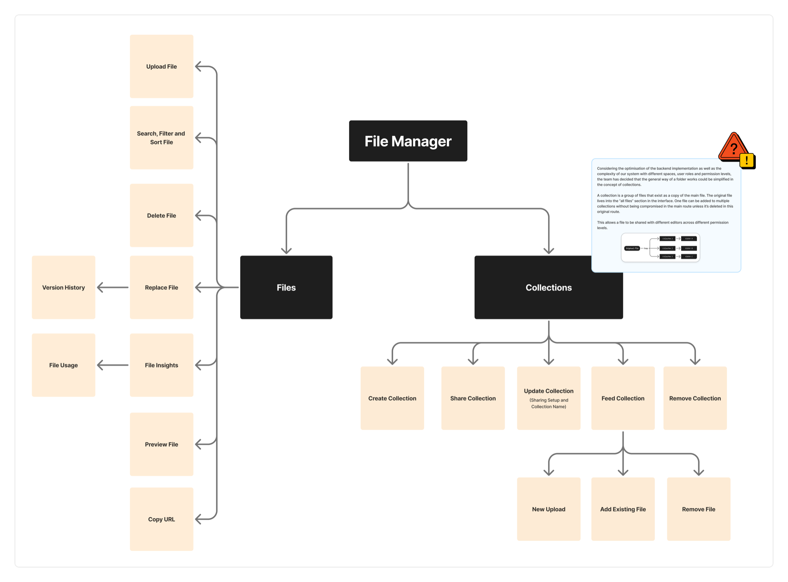
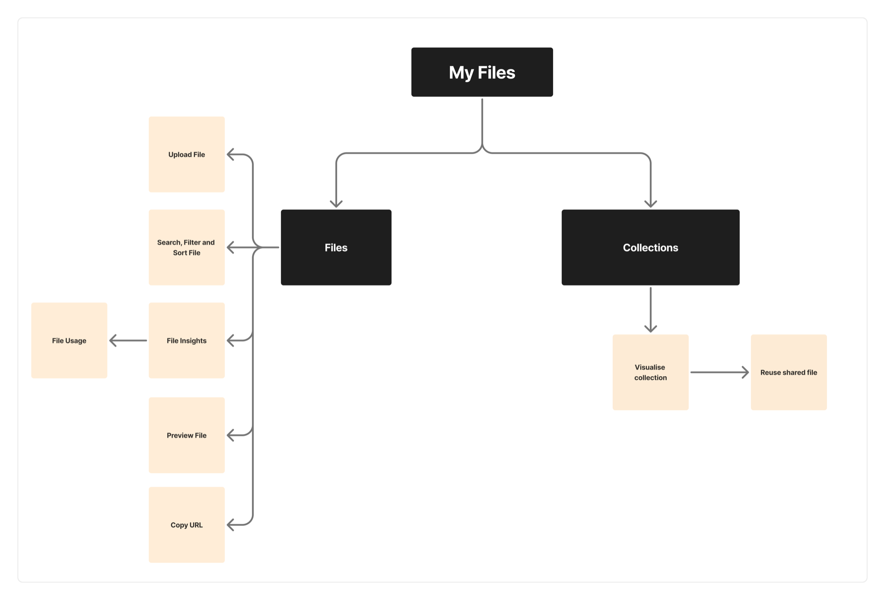

Overview
Over roughly four years I led the development of a connected media-management ecosystem for Staffbase. I owned this work end-to-end, from discovery through UX/UI, hand-off, implementation, and iteration.
That long design process produced a system of two complementary features: My Files (for content editors) and File Manager (for admins), turning scattered, one-off uploads into a central, permission-aware system for uploading, reusing, managing, organizing, sharing, replacing, and analyzing files.
Today the File Manager sits at roughly 95% adoption with about 1,500 active business accounts.
Problem
Experience Studio is where companies build the content their employees read: news, pages, emails, campaigns. A big part of that content is media: images, documents, video. And media was exactly where the Studio fell short.
The team came to me with a narrow request: let users delete their files. But as I dug into why deletion was even a problem, a bigger pattern surfaced. Deletion was just one missing piece of a tool that had no real system for managing media at all. That reframed the work. The question stopped being “how do we add a delete button” and became “How do we enable our users to manage and reuse media files inside our platform?”
The product has two sides:
- The Studio, where admins and editors create content.
- The App, where employees consume it.
My scope was the Studio, and the two roles who live there:
- Amara, the Admin: keeps the whole company on the correct, approved, up-to-date assets.
- Leo, the Editor: just wants to reuse the right files and publish without friction.
When I picked up this work, managing media in the Studio meant:
- A confusing upload flow. An overloaded toolbar with three separate upload buttons, plus drag-and-drop and media widgets. Too many ways to do one thing.
- No reuse. Every use of a file meant a fresh upload, even for the same asset.
- No feedback. No upload progress, no clear errors.
- No way to delete or replace. Outdated documents lived on across published pages with no clean way to update them.
- No sharing or collaboration. Admins couldn’t hand editors a curated set of approved assets, so teams fell back on Google Drive and Canva, pulling work outside the Studio entirely.

In short: the Studio had no central, trustworthy home for company media. That was a daily usability pain and a business problem: every file managed in an external tool was value leaving the product.
Approach
This was not a tidy, linear process, and I think that’s the honest, valuable part of the story. It was also a unique opportunity to push and grow as a designer.
Discovery
We ran early workshops with multiple stakeholders to understand how media was actually handled, both by our customers and internally, across our infrastructure and code architecture (user roles, spaces, and branches).
Through many product calls with customers and users, a recurring insight emerged: on almost every team, media management was happening outside of our platform. That became a valuable signal, pointing us to missing opportunities in our product.
This pushed me to dig deeper into what the missing pieces were and how they were blocking user flows, working closely with our PM and customer care teams. Along the way, I learned how the editor and administrator roles worked and overlapped across content planning, creation, and management. That understanding led to the framing of two distinct, role-based interfaces: My Files, focused on content creators, and File Manager, focused on admin roles.
“I use the same document in a lot of places. Our handbook lives on the HR page, the onboarding page, and a few others. But it changes often, and every time it does I have to update every copy by hand. I just want to upload the new version once and have it reflected everywhere.”
Enterprise Customer X
These insights fed a set of “How Might We” questions that kept reframing the problem as it grew:
- How might we allow content creators to upload and reuse their own files?
- How might we create a central place where admins can create, share, and manage files with editors?
- How might we simplify media usage inside the Studio?
- How might we enable admins to update document files already used in pages and news?
- How might we measure adoption of these features?
A feature-architecture map
Embracing the non-linear. The project literally started as a narrow “How might we let users delete files?” Then it grew: once we realized that deletion touches roles, permissions, and published content, it expanded into the much larger File Manager vision.
Because the ecosystem became genuinely complex, I built a feature-architecture scheme: a diagram that translated users’ jobs-to-be-done into a connected set of features, showing where My Files and File Manager overlap, connect, or stay separate. It kept the team aligned on what belonged where, and it strengthened the communication and negotiation between Product Design and Product Management.


Solution
To close a real gap for our users, I pushed to keep developing the Media Management Ecosystem as a role-based solution, designed from the start to integrate with the rest of the product portfolio: the email module, internal plugins like Microsoft SharePoint, calendar and planning, external digital asset management systems (DAMs), and others.
That meant splitting the experience by role, then connecting the two halves inside of the Experience Studio:
- My Files (editor-facing) lives inside the content-creation flow. Editors upload new files, reuse their own previous uploads from many entry points (media plugins, email, widgets), and access collections that admins have shared with them. The guiding principle: in the editor’s world, the goal is to create content, not to manage files.
- File Manager (admin-facing): a dedicated, global interface for admins to upload, search, filter, organize, share, delete, replace, and analyze files across the whole platform. The guiding principle: give admins real control and oversight, in a space designed for management, not content creation.
Under the hood I designed shared functions the two features could reuse, so the ecosystem stayed consistent even as each side evolved at its own pace.


Deep dive: File Manager
The File Manager is the heart of media handling in the Experience Studio — the admin’s command center for company assets and content planning. It grew feature by feature, each with its own design story.
Given the limits of a case study, I won’t cover everything, but I’ll introduce a few of the features that shaped this ecosystem. For a detailed walkthrough, I’m happy to take you through the Figma files.
Collections & sharing: the headline problem
Admins needed to group approved files and share them with specific editors or user groups. Key decisions:
- We renamed “folders” → “collections.” A folder implies moving a file; in our system a file is copied to exist inside a collection while the original stays put. New name, less confusion.
- For the MVP we deliberately dropped sub-collections: a flatter structure meant no breadcrumbs and a simpler back-button navigation.
- Sharing was built on user groups, reusing logic the Studio already had, with roles per collection (view-only vs. manage).
File deletion: where it all started
The project’s original seed. We had to reason carefully about impact: a deleted file might live in My Files, in the content editor, and in already-published content. We ended up defining multiple deletion paths (including a “forced deletion” for admins to remove compromised or wrong files across every space) and, importantly, rethought who should be allowed to delete, given the downstream impact on published content.
Replacement + version history + file usage
A frequently requested capability: let admins swap an outdated document for a new version without manually hunting down and re-uploading it everywhere. This raised deep questions: when exactly does the replacement happen? Does it propagate to every usage? Where does version history live? After back-and-forth with engineering, we chose a fullscreen approach over stacking a modal-on-a-modal, which reduced accessibility problems and gave users the context they needed to replace confidently.
File Insights: measuring media
Contextual analytics per file type, starting with video metrics (Total Play, Unique Play, Watch Time), tracked via Pendo. We ran usability tests on how to surface a metric’s explanation without interrupting the flow, landing on a support “?” trigger rather than fragile hover interactions. Scope was intentionally trimmed over time as priorities shifted, an honest reflection of real product trade-offs.
Search, filters & sorting
How do you find assets across different collections, users, and spaces? This was one of the most basic, yet most complex, sets of features, because it relied heavily on the backend structure: how we stored and located assets across products, teams, customer IDs, and spaces. Between design ideation and implementation, compromises were made to fit the scope and roadmap. In the end, we could search by exact file name. The catch: our users didn’t name their files. Without a doubt, this feature pushed me to grow as a designer working inside an implementation team.
Key decisions & trade-offs
- Folders → Collections: language shapes mental models; we chose the word that matched how the system actually behaves.
- Condensed upload icon: we collapsed the cluttered toolbar into a single condensed upload. The first icon (a paperclip) confused users, who couldn’t tell attachments from media uploads; we switched to an image icon and adoption of the new toolbar settled.
- Fullscreen over modal-on-modal: chosen for accessibility and context, and it gave us a flexible, expandable pattern for future features.
- Accessibility first: baked into decisions rather than bolted on at the end.
- Scoping and feature priority: repeatedly cutting scope (no sub-collections, video-only insights first, replacement before version history, no version history for deletion) to ship real value in small, backend-feasible batches.
Outcomes
The ecosystem shipped in batches and became the central, permission-aware place for handling company media in the Studio. What that changed, by audience:
- For users
- Admins finally have real control and oversight of company media, in a space designed for management rather than content creation. Editors can reuse and share approved assets without leaving the content flow.
- For the design team
- A new media-upload flow and a reusable set of UX patterns for uploading, including error and empty states. A media module ready to be adopted across other product areas, plus a consolidated File Manager Design System Library as the single source of truth.
- For the business
- One permission-aware system for uploading, reusing, organizing, sharing, replacing, and analyzing media across the whole Studio, used by about 1,500 active business accounts. It also laid the groundwork for wider integrations, from the email module and SharePoint to external DAMs, as the team scopes its move fully out of Beta.
Success Metrics
Challenges
The Studio is built on layered roles and permission levels, defined by user groups and tied to structural units called spaces. Almost every media decision collided with this system:
- Which files should be saved? From which plugins?
- Where should they be saved?
- Are the content creators (including external creators) allowed to see all files?
- Who is allowed to delete a file, and from where? An editor? An admin? What happens to content that already uses it?
- How do you let an admin share a curated collection of files without that sharing being blocked or fragmented by space permissions?
- If a file is replaced, does it change everywhere it’s used, in content, in collections, in someone’s personal files?
The single biggest breakthrough was realizing that file handling should not be tied to spaces at all, but to the user's ID instead. The content section was filtered by space definitions, which meant a space-bound approach to sharing would quietly fail for real customers. Decoupling media from the space hierarchy, and eventually moving the File Manager to a global place in the Studio, is what finally made media management (Collections, deletion, sharing) possible.
The visible design work (clean modals, clear icons) sat on top of a much harder, invisible design problem: modeling who can do what, to which file, in which context. That’s the thread I’m proudest of.
Where it broke: failures & iterations
The parts I learned the most from didn’t work the first time.
- The paperclip that confused everyone. The first condensed-upload icon (a paperclip) made users think “attachment,” not “media upload.” We switched to an image icon and the confusion disappeared.
- Version history vs. changelog. Backend started building version history as a changelog (every edit), while the design intent was to preserve the file’s original registration. It took several cross-team discussions to realign on the same concept.
- Putting File Manager in the wrong place. In the first implementation the information architecture wasn’t clear, and the global File Manager landed under “content”, even though that clashed with how spaces work. We flagged it, then later moved it to a properly global location.
- Hover-heavy interactions hurt accessibility. Early designs leaned on hover and tooltips; testing and review pushed us to reduce hover and add a persistent support “?” trigger instead.
- Losing the source of truth. With so many iterations, developers sometimes built from outdated Figma files. I fixed the process, not just a screen, consolidating everything into a single Figma Library (documented components, used icons, known issues) so there was one reliable source.
Reflection
This was the most complex system I’ve designed: four years, two roles, one tangled permission model, and a genuinely non-linear path from “let users delete a file” to “a central media-management ecosystem.”
The real design problem was rarely the screen in front of me: it was the invisible model of roles, permissions, and context underneath it. Getting that model right is what let the visible design finally feel simple.